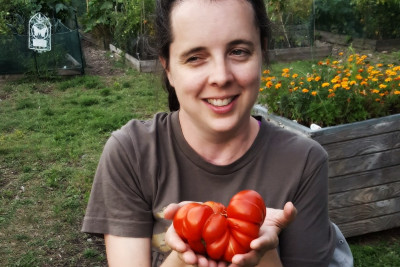
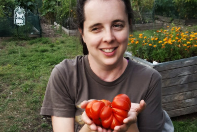
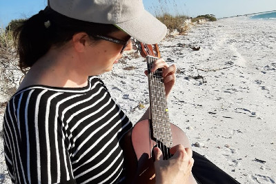
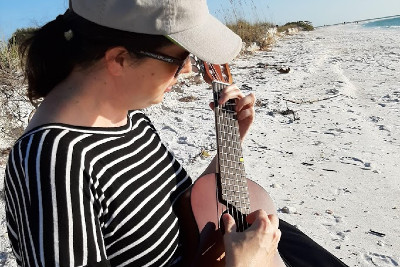

About Me
My name is Jessica and I have a passion for making the world a better, happier place. I have a background in the public sector, including urban planning and elections administration, and a Master's Degree in Public Administration. I also have over 10 years experience in GIS (Geographic Information Systems) mapping and data analysis. Subject areas that interest me include: sustainable food systems, building community, racial equity, food security, voter rights and disability rights. Working with organizations that make a positive impact is important to me.
Why Am I Transitioning to a Tech Career?
I'm interested in how technology, specifically data analytics, programming, and public-facinng development projects can give value, equity and power to the public. In my experience, the public and nonprofit sectors often do not have the advantages that cutting edge technology offers the business and startup sectors. I want to be a part of harnessing tech to enhance the way the public and nonprofit sectors operate.
I started learning Python a couple years ago, because Python can be used within the GIS environment to automate analysis and more easily manipulate data. I can definitely say that Python is my first love, when it comes to programming languages. I also have experience with R for data analysis. I love learning new libraries, languages, and tools.
Other Interests
Gardening
Gardening, specifically growing food, is a passion of mine. In addition to my own backyard garden, I also am a founding Board Member of a nonprofit community garden in my neighborhood that provides 45 garden plots for people who may not have a place to garden at home. I also have experience working in sustainable agriculture, as I ran my own farming business 2012-2015. I grew veggies, herbs and flowers and sold my produce via a CSA program.
Music
My enthusiasm for music probably outweighs my talent, but boy is it fun anyway! I play guitar and ukulele and in 2018 began playing in a local bluegrass band called Exit Left. We would play gigs and local establishments, then COVID hit and the band was put on hiatus. The reason I like to play Bluegrass music is because it is music made by and for regular people. If you can play just three chords, then you can play along to dozens of Bluegrass songs. While there are many virtuosos Bluegrass musicians out there, Bluegrass is also the great musical equalizer. Learning music is a lot like learning to code. In each, a seemingly endless amount of information can be broken down into small chunks that, once understood, can be used in combination to express creativity and create something new. Also, both music and programming are always evolving with new tools and techniques coming out all the time.
 

 
